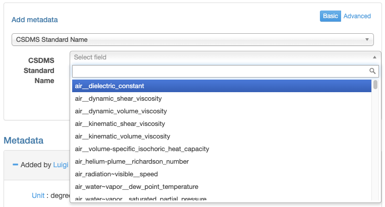
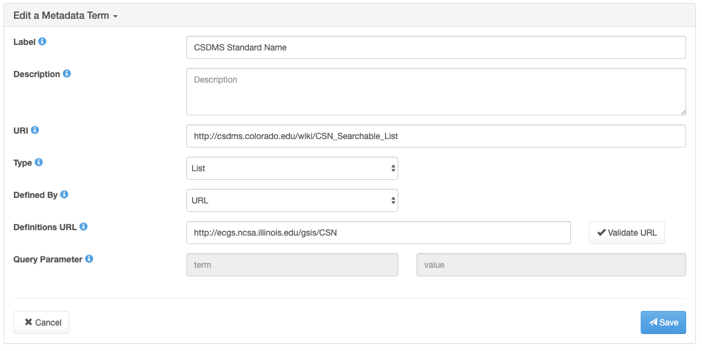
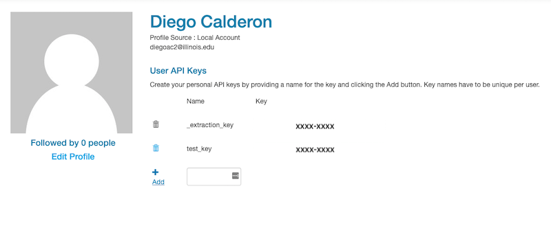

Semantic Annotation of Data using JSON Linked Data¶
Luigi Marini (lmarini@illinois.edu), Diego Calderon (diegoac2@illinois.edu), Praveen Kumar (kumar1@illinois.edu)
University of Illinois at Urbana-Champaign
Abstract¶
The Earthcube Geosemantics Framework (https://ecgs.ncsa.illinois.edu/) developed a prototype of a decentralized framework that combines the Linked Data and RESTful web services to annotate, connect, integrate, and reason about integration of geoscience resources. The framework allows the semantic enrichment of web resources and semantic mediation among heterogeneous geoscience resources, such as models and data.
This notebook provides examples on how the Semantic Annotation Service can be used to manage linked controlled vocabularies using JSON Linked Data (JSON-LD), including how to query the built-in RDF graphs for existing linked standard vocabularies based on the Community Surface Dynamics Modeling System (CSDMS), Observations Data Model (ODM2) and Unidata udunits2 vocabularies, how to query build-in crosswalks between CSDMS and ODM2 vocabularies using SKOS, and how to add new linked vocabularies to the service. JSON-LD based definitions provided by these endpoints will be used to annotate sample data available within the IML Critical Zone Observatory data repository using the Clowder Web Service API (https://data.imlczo.org/). By supporting JSON-LD, the Semantic Annotation Service and the Clowder framework provide examples on how portable and semantically defined metadata can be used to better annotate data across repositories and services.
Table of contents¶
Introduction¶
We face many challenges in the process of extracting meaningful information from data. Frequently, these obstacle compel scientists to perform the integration of models with data manually. Manual integration becomes exponentially difficult when a user aims to integrate long-tail data (data collected by individual researchers or small research groups) and long-tail models (models developed by individuals or small modeling communities). We focus on these long-tail resources because despite their often-narrow scope, they have significant impacts in scientific studies and present an opportunity for addressing critical gaps through automated integration. The goal of the Goesemantics Framework is to provide a framework rooted in semantic techniques and approaches to support “long-tail” models and data integration.
The Linked Data paradigm emerged in the context of Semantic Web technologies for publishing and sharing data over the Web. It connects related individual Web resources in a Graph database, where resources represent the graph nodes, and an edge connects a pair of nodes. Publishing and linking scientific resources using Semantic Web technologies require that the user community follows the three principles of Linked Data:
Each resource needs to be represented using a unique Uniform Resource Identifier (URI), which consists of: (i) A Uniform Resource Locator (URL) to define the server path over the Web, and (ii) A Uniform Resource Name (URN) to describe the exact name of the resource.
The relationships between resources are described using the triple format, where a subject S has a predicate P with an object O. A predicate is either an undirected relationship (bi-directional), where it connects two entities in both ways or a directed relationship (uni-directional), where the presence of a relationship between two entities in one direction does not imply the presence of a reverse relationship. The triple format is the structure unit for the Linked Data system.
The HyperText Transfer Protocol (HTTP) is used as a universal access mechanism for resources on the Web.
For more information about linked data, please visit https://www.w3.org/standards/semanticweb/data.
The Geosemantics Integration Service (GSIS) is a playground to show a lot of these principles in practice with respect to Earth science. Below we show many of the endpoints available in the GSIS and how they can enable new ways to manage metadata about data and models. By virtue of leveraging Semntic Web Technologies, the approaches below are compatible with other efforts such as the ESIP science-on-schema effort. Some of the endpoints shown below are currently used in production, others are proof of concept developement. The goal of this notebook is to show what is possible when using Linked Data approaches.
Basic Requirements¶
We will be interacting with two web services. The first is the Geosemantics Integration Service (GSIS) available at http://hcgs.ncsa.illinois.edu. This service provides support for standandard vocabularies and methods for transforming typical strings used for tracking time, space and physical variables into well formed Linked Data documents. The second service is the NSF Intensively Managed Landscape Critical Zone Observatory data management system (https://data.imlczo.org/). We will be retrieving data from it and uploading data and metadata back to it using the Clowder web service API. Clowder is a customizable and scalable data management system to support any data format (Marini et al. 2018). It is under active development and deployed for a variety of research projects. For more information about Clowder please visit https://clowderframework.org/.
We first setup some basic requirements used throughout the notebook. We use the ubiqutous Requests Python library to intereact with both APIs.
import requests
import json
gsis_host = 'https://ecgs.ncsa.illinois.edu'
clowder_host = 'https://data.imlczo.org/clowder'
Geosemantics Integration Service (GSIS)¶
Since geospatial data comes in many formats, from shapefiles to geotiffs to comma-delimited text files, it is often helpfull to annotate the files with portable metadata that can be used to identify what each files contains. For geospatial data the temporal, spatial, and physical properties dimensions are important and often used to search over a large collection of data. The Geosemantics Integration Service (GSIS) provides a series of endpoints to simplify annotating geospatial data. It includes temporal endpoints so that generic formats for date and times can be translated to well formted JSON-LD formats (Elag et al. 2015). It includes the ability to store standard vocabularies as generic RDF graphs and retrieve those as simple JSON documents for easy integration in external services (for example Clowder). It also includes the ability to make links between terms from two different standard vocabularies using SKOS and OWN same as predicates.
RDF Graphs¶
All information stored in the GSIS is stored in the form of RDF graphs using Apache Jena. The following endpoints list all know RDF graphs and let the client retrieve each graph as JSON-LD. The content of these graphs can vary greatly, from standardad vocabularies to definitions of computational models. For a full list of methods please see the documentation available at http://hcgs.ncsa.illinois.edu/. New RDF graphs can be added to the system using private HTTP POST endpoints which accept RDF graphs serialized as JSON-LD or Turtle format.
# Get a lists of the names of all graphs in the Knowledge base
r = requests.get(f"{gsis_host}/gsis/listGraphNames")
r.json()
{'graph_names': ['csdms',
'odm2-vars',
'udunits2-base',
'udunits2-derived',
'udunits2-accepted',
'udunits2-prefix',
'google-unit',
'model-2',
'model-3',
'data-1',
'data-2',
'data-3',
'variable_name_crosswalk',
'variable_name_crosswalk-owl',
'variable_name_crosswalk-skos',
'model_test',
'model_test11',
'config_vars.ttl',
'model-x',
'Info',
'Inf',
'demo-model',
'csv-mappings',
'models_graph9d7d400f53864989a05d3ae539f30a78',
'models_graph37baec3114d74ca6abd72cce75f966db',
'models_graphe604316f14334985aaf4ebd6fe220e77',
'models_graph26e29f5026664f11b244072bf6956f74']}
# List the content of the Graph (for example, CSDMS Standard Names)
graph = 'csdms'
r = requests.get(f"{gsis_host}/gsis/read?graph={graph}")
r.json().get('@graph')[0:5] # We just show the top 10 results, to see all results remove the slice operator [0:5]
[{'@id': 'csn:air__dielectric_constant',
'@type': 'csn:name',
'csn:base_object': 'air',
'csn:base_quantity': 'constant',
'csn:object_fullname': 'air',
'csn:object_part': 'air',
'csn:quantity_fullname': 'dielectric_constant',
'csn:quantity_part': ['dielectric', 'constant']},
{'@id': 'csn:air__dynamic_shear_viscosity',
'@type': 'csn:name',
'csn:base_object': 'air',
'csn:base_quantity': 'viscosity',
'csn:object_fullname': 'air',
'csn:object_part': 'air',
'csn:quantity_fullname': 'dynamic_shear_viscosity',
'csn:quantity_part': ['dynamic', 'shear', 'viscosity']},
{'@id': 'csn:air__dynamic_volume_viscosity',
'@type': 'csn:name',
'csn:base_object': 'air',
'csn:base_quantity': 'viscosity',
'csn:object_fullname': 'air',
'csn:object_part': 'air',
'csn:quantity_fullname': 'dynamic_volume_viscosity',
'csn:quantity_part': ['dynamic', 'viscosity', 'volume']},
{'@id': 'csn:air__kinematic_shear_viscosity',
'@type': 'csn:name',
'csn:base_object': 'air',
'csn:base_quantity': 'viscosity',
'csn:object_fullname': 'air',
'csn:object_part': 'air',
'csn:quantity_fullname': 'kinematic_shear_viscosity',
'csn:quantity_part': ['shear', 'viscosity', 'kinematic']},
{'@id': 'csn:air__kinematic_volume_viscosity',
'@type': 'csn:name',
'csn:base_object': 'air',
'csn:base_quantity': 'viscosity',
'csn:object_fullname': 'air',
'csn:object_part': 'air',
'csn:quantity_fullname': 'kinematic_volume_viscosity',
'csn:quantity_part': ['viscosity', 'volume', 'kinematic']}]
Standard Vocabularies¶
Two RDF graphs in the GSIS store two external standard vocabularies in RDF. The first one is the CSDMS Standard Terms (CSN) (Peckham et al. 2014). The second is the ODM2 Variable Name Vocabulary (Horsburgh et al. 2016). To make it easier to query these RDF by graphs, the GSIS provide simplified methods to search across standard vocabularies by label and look attributes of a specific term in a vocabulary.
# Search standard vocabularies by search query
query = 'wind speed'
r = requests.get(f'{gsis_host}/gsis/sas/vars/list?term={query}')
r.json()
['csn:earth_surface_wind__range_of_speed',
'csn:land_surface_wind__reference_height_speed',
'csn:land_surface_wind__speed_reference_height',
'csn:projectile_origin_wind__speed',
'odm2:windGustSpeed',
'odm2:windSpeed']
# Get all properties of a given CSDMS Standard Name from a specific graph
graph = 'csdms'
name = 'air__dynamic_shear_viscosity'
r = requests.get(f"{gsis_host}/gsis/CSNqueryName?graph={graph}&name={name}")
r.json()
{'name': 'air__dynamic_shear_viscosity',
'type': 'http://ecgs.ncsa.illinois.edu/2015/csn/name',
'object_fullname': 'air',
'quantity_fullname': 'dynamic_shear_viscosity',
'base_object': 'air',
'base_quantity': 'viscosity',
'object_part': ['air'],
'quantity_part': ['dynamic', 'shear', 'viscosity']}
List of CSDMS Standard Names and ODM2 as JSON Arrays¶
To simplify clients’ ability to parse these standard vocabularies, the GSIS provides ways to list all unique identifiers from both vocabularies as play JSON arrays. This for example is used by Clowder to show a list of standard term for each vocabulary in its interface. It is worth noting that Clowder lets users define these lists through its GUI both as local list, but more importantly as remote JSON endpoints so that, as lists are updated, the latest version is always shown to the user. Here is an example from the IMLCZO instance.
This is what a user sees when manually adding metadata to a file or dataset. The list is dynamically loaded at run time.

This is what an adminstrator of the system or a data sharing space see when adding more options to what users can defined from the GUI. This is only for metadata added by users from the GUI. Later we will show how to programmatically add any type of metadata to a file or dataset using the web service API.

The widget listing options above is populated by calling the endpoints below. The Definitions URL is how the system is aware of which external endpoint to call. Any service providing the same interface can be utilized.
# Get the CSDMS Standard Names as a flat list.
r = requests.get(f"{gsis_host}/gsis/sas/sn/csn")
csn_terms = r.json()
print(f'Found {len(csn_terms)} terms. Showing top 20 results:')
csn_terms[0:20] # We just show the top 20 results, to see all results remove the slice operator [0:20]
Found 2573 terms. Showing top 20 results:
['air__dielectric_constant',
'air__dynamic_shear_viscosity',
'air__dynamic_volume_viscosity',
'air__kinematic_shear_viscosity',
'air__kinematic_volume_viscosity',
'air__volume-specific_isochoric_heat_capacity',
'air_helium-plume__richardson_number',
'air_radiation~visible__speed',
'air_water~vapor__dew_point_temperature',
'air_water~vapor__saturated_partial_pressure',
'aircraft__flight_duration',
'airfoil__drag_coefficient',
'airfoil__lift_coefficient',
'airfoil_curve~enclosing__circulation',
'airplane__altitude',
'airplane__mach_number',
'airplane_wing__span',
'air~dry__mass-specific_gas_constant',
'air~dry_water~vapor__gas_constant_ratio',
'aluminum__mass-specific_isobaric_heat_capacity']
# Get the ODM2 Variable Names as a flat list.
r = requests.get(f"{gsis_host}/gsis/sas/sn/odm2")
odm2_terms = r.json()
print(f'Found {len(odm2_terms)} terms. Showing top 20 results:')
r.json()[0:20] # We just show the top 20 results, to see all results remove the slice operator [0:20]
Found 792 terms. Showing top 20 results:
['19_Hexanoyloxyfucoxanthin',
'1_1_1_Trichloroethane',
'1_1_2_2_Tetrachloroethane',
'1_1_2_Trichloroethane',
'1_1_Dichloroethane',
'1_1_Dichloroethene',
'1_2_3_Trimethylbenzene',
'1_2_4_5_Tetrachlorobenzene',
'1_2_4_Trichlorobenzene',
'1_2_4_Trimethylbenzene',
'1_2_Dibromo_3_Chloropropane',
'1_2_Dichlorobenzene',
'1_2_Dichloroethane',
'1_2_Dichloropropane',
'1_2_Dimethylnaphthalene',
'1_2_Dinitrobenzene',
'1_2_Diphenylhydrazine',
'1_3_5_Trimethylbenzene',
'1_3_Dichlorobenzene',
'1_3_Dimethyladamantane']
With some simple Python we can search specific substrings from these lists.
[i for i in csn_terms if 'temperature' in i]
['air_water~vapor__dew_point_temperature',
'atmosphere_air__anomaly_of_temperature',
'atmosphere_air__azimuth_angle_of_gradient_of_temperature',
'atmosphere_air__east_derivative_of_temperature',
'atmosphere_air__elevation_angle_of_gradient_of_temperature',
'atmosphere_air__equivalent_potential_temperature',
'atmosphere_air__equivalent_temperature',
'atmosphere_air__increment_of_temperature',
'atmosphere_air__magnitude_of_gradient_of_temperature',
'atmosphere_air__north_derivative_of_temperature',
'atmosphere_air__potential_temperature',
'atmosphere_air__temperature',
'atmosphere_air__temperature_dry_adiabatic_lapse_rate',
'atmosphere_air__temperature_environmental_lapse_rate',
'atmosphere_air__temperature_lapse_rate',
'atmosphere_air__temperature_saturated_adiabatic_lapse_rate',
'atmosphere_air__x_derivative_of_temperature',
'atmosphere_air__y_derivative_of_temperature',
'atmosphere_air__z_derivative_of_temperature',
'atmosphere_air_water~vapor__bubble_point_temperature',
'atmosphere_air_water~vapor__dew_point_temperature',
'atmosphere_air_water~vapor__frost_point_temperature',
'atmosphere_air_water~vapor__virtual_potential_temperature',
'atmosphere_air_water~vapor__virtual_temperature',
'atmosphere_bottom_air__temperature',
'atmosphere_bottom_air_water~vapor__dew_point_temperature',
'atmosphere_bottom_air_water~vapor__frost_point_temperature',
'atmosphere_top_air__temperature',
'atmosphere_water~vapor__dew_point_temperature',
'atmosphere_water~vapor__frost_point_temperature',
'channel_bottom_water__temperature',
'channel_water__temperature',
'channel_water_surface_air__temperature',
'channel_water_surface_water__temperature',
'chocolate__melting_point_temperature',
'earth_black-body__temperature',
'earth_equator__average_temperature',
'earth_interior__down_z_derivative_of_temperature',
'earth_surface__average_temperature',
'earth_surface__range_of_diurnal_temperature',
'glacier_bed__down_z_derivative_of_temperature',
'glacier_bottom_ice__temperature',
'glacier_ice__azimuth_angle_of_gradient_of_temperature',
'glacier_ice__depression_of_melting_point_temperature',
'glacier_ice__down_derivative_of_temperature',
'glacier_ice__east_derivative_of_temperature',
'glacier_ice__elevation_angle_of_gradient_of_temperature',
'glacier_ice__magnitude_of_gradient_of_temperature',
'glacier_ice__melting_point_temperature',
'glacier_ice__north_derivative_of_temperature',
'glacier_ice__pressure_melting_point_temperature',
'glacier_ice__temperature',
'glacier_ice__x_derivative_of_temperature',
'glacier_ice__y_derivative_of_temperature',
'glacier_ice__z_derivative_of_temperature',
'glacier_top__temperature',
'glacier_top_ice__temperature',
'glacier_top_ice__time_derivative_of_temperature',
'glacier_top_surface__temperature',
'hydrometeor__temperature',
'ice__melting_point_temperature',
'iron__melting_point_temperature',
'land_surface__anomaly_of_temperature',
'land_surface__temperature',
'land_surface_air__temperature',
'land_surface~10m-above_air__temperature',
'sea_bottom_water__temperature',
'sea_ice__depression_of_melting_point_temperature',
'sea_ice__melting_point_temperature',
'sea_ice_bottom_water__temperature',
'sea_ice_surface_air__temperature',
'sea_surface_air-vs-water__difference_of_temperature',
'sea_surface_air__reference_temperature',
'sea_surface_air__temperature',
'sea_surface_water__anomaly_of_temperature',
'sea_surface_water__temperature',
'sea_water__azimuth_angle_of_gradient_of_temperature',
'sea_water__east_derivative_of_temperature',
'sea_water__elevation_angle_of_gradient_of_temperature',
'sea_water__magnitude_of_gradient_of_temperature',
'sea_water__north_derivative_of_temperature',
'sea_water__potential_temperature',
'sea_water__temperature',
'sea_water__time_average_of_square_of_potential_temperature',
'sea_water__time_derivative_of_temperature',
'sea_water__x_derivative_of_temperature',
'sea_water__y_derivative_of_temperature',
'sea_water__z_derivative_of_temperature',
'snow__temperature',
'snow__threshold_of_degree-day-temperature',
'snowpack__degree-day_threshold_temperature',
'snowpack__diurnal_max_of_temperature',
'snowpack__diurnal_min_of_temperature',
'snowpack__diurnal_range_of_temperature',
'snowpack__mean_of_temperature',
'snowpack__time_derivative_of_temperature',
'snowpack_bottom__temperature',
'snowpack_top__temperature',
'snowpack_top_air__temperature',
'soil__reference_depth_temperature',
'soil__temperature',
'soil__temperature_reference_depth',
'water__boiling_point_temperature',
'water__freezing_point_temperature']
Crosswalks Between Standard Vocabularies¶
With so many standard vocabularies available, it is helpful to defined equivalency between terms from separate vocabularies. To this end, the GSIS provides the ability to establish mappings between terms in different graphs using the skos:sameAs predicate. The user can the query this graph of relationships using the following endpoint.
# Given a term from one vocabulary, find equivalent ones in other vocabularies.
var = 'http://vocabulary.odm2.org/variablename/windSpeed'
r = requests.get(f'{gsis_host}/gsis/var/sameAs/skos?varName={var}')
r.json()
['http://csdms.colorado.edu/wiki/CSN_Searchable_List/land_surface_air_flow__speed',
'http://vocabulary.odm2.org/variablename/windSpeed',
'http://vocabulary.odm2.org/variablename/windGustSpeed']
Units¶
Physical variables are not the only type of standard vocabularies the GSIS stores. Following are examples of two different lists of standard units imported in the GSIS, Unidata udunits2 and Google Units.
# Get the list of udunits2 units in JSON format.
r = requests.get(f"{gsis_host}/gsis/sas/unit/udunits2")
r.json()[0:20] # We just show the top 20 results, to see all results remove the slice operator [0:20]
['ampere',
'arc_degree',
'arc_minute',
'arc_second',
'candela',
'coulomb',
'day',
'degree_Celsius',
'electronvolt',
'farad',
'gram',
'gray',
'henry',
'hertz',
'hour',
'joule',
'katal',
'kelvin',
'kilogram',
'liter']
## Get the list of Google units in JSON format.
r = requests.get(gsis_host + "/gsis/sas/unit/google")
r.json()[0:20] # We just show the top 20 results, to see all results remove the slice operator [0:20]
['acre',
'acre-foot',
'Algerian dinar',
'ampere',
'ampere hour',
'amu',
'arc minute',
'arc second',
'are',
'Argentine peso',
'Astronomical Unit',
'ATA pica',
'ATA point',
'atmosphere',
'atomic mass unit',
'Australian cent',
'Australian dollar',
'Bahrain dinar',
"baker's dozen",
'bar']
Temporal Annotation¶
To convert from strings representing time to a more formal definition, the GSIS provides three endpoints to represent instant, interval, and time series. Time values are represented in UTC (Coordinated Universal Time) format. Times are expressed in local time, together with a time zone offset in hours and minutes. For more information about date and time formats, please visit https://www.w3.org/TR/NOTE-datetime.
Time Instant Annotation¶
Query parameters:
time (string): time value in UTC format
# Get a temporal annotation for a time instant in a JSON-LD format.
time = '2014-01-01T08:01:01-09:00'
r = requests.get(f"{gsis_host}/gsis/sas/temporal?time={time}")
r.json()
{'@context': {'dc': 'http://purl.org/dc/elements/1.1/',
'dcterms': 'http://purl.org/dc/terms/',
'xsd': 'http://www.w3.org/2001/XMLSchema#',
'time': 'http://www.w3.org/2006/time#',
'tzont': 'http://www.w3.org/2006/timezone-us'},
'@id': 'http://ecgs.ncsa.illinois.edu/time_instant',
'@type': 'time:Instant',
'dc:date': "yyyy-MM-dd'T'HH:mm:ssZ",
'time:DateTimeDescription': {'time:year': '2014',
'time:month': '1',
'time:day': '1',
'tzont': '-09:00',
'time:hours': '8',
'time:minutes': '1',
'time:seconds': '1'}}
Time Interval Annotation¶
Query parameters:
beginning (string): time value in UTC format.
end (string): time value in UTC format.
# Get a temporal annotation for a time interval in a JSON-LD format.
beginning = '2014-01-01T08:01:01-10:00'
end = '2014-12-31T08:01:01-10:00'
r = requests.get(f"{gsis_host}/gsis/sas/temporal?beginning={beginning}&end={end}")
r.json()
{'@context': {'dc': 'http://purl.org/dc/elements/1.1/',
'dcterms': 'http://purl.org/dc/terms/',
'xsd': 'http://www.w3.org/2001/XMLSchema#',
'time': 'http://www.w3.org/2006/time#',
'tzont': 'http://www.w3.org/2006/timezone-us'},
'@id': 'http://ecgs.ncsa.illinois.edu/time_interval',
'@type': 'time:Interval',
'time:Duration': {'time:hasBeginning': {'dc:date': "yyyy-MM-dd'T'HH:mm:ssZ",
'time:DateTimeDescription': {'time:year': 2014,
'time:month': 1,
'time:day': 1,
'tzont': '-10:00',
'time:hours': 8,
'time:minutes': 1,
'time:seconds': 1}},
'time:hasEnd': {'dc:date': "yyyy-MM-dd'T'HH:mm:ssZ",
'time:DateTimeDescription': {'time:year': 2014,
'time:month': 12,
'time:day': 31,
'tzont': '-10:00',
'time:hours': 8,
'time:minutes': 1,
'time:seconds': 1}}}}
Time Series Annotation¶
Query parameters:
beginning (string): time value in UTC format.
end (string): time value in UTC format.
interval (float): time step.
# Get a temporal annotation for a time series in a JSON-LD format.
beginning = '2014-01-01T08:01:01-10:00'
end = '2014-03-01T08:01:01-10:00'
interval = '4'
r = requests.get(f"{gsis_host}/gsis/sas/temporal?beginning={beginning}&end={end}&interval={interval}")
r.json()
{'@context': {'dc': 'http://purl.org/dc/elements/1.1/',
'dcterms': 'http://purl.org/dc/terms/',
'xsd': 'http://www.w3.org/2001/XMLSchema#',
'time': 'http://www.w3.org/2006/time#',
'tzont': 'http://www.w3.org/2006/timezone-us'},
'@id': 'http://ecgs.ncsa.illinois.edu/time_series',
'time:Duration': {'time:hasBeginning': {'dc:date': "yyyy-MM-dd'T'HH:mm:ssZ",
'time:DateTimeDescription': {'time:year': 2014,
'time:month': 1,
'time:day': 1,
'tzont': '-10:00',
'time:hours': 8,
'time:minutes': 1,
'time:seconds': 1}},
'time:hasEnd': {'dc:date': "yyyy-MM-dd'T'HH:mm:ssZ",
'time:DateTimeDescription': {'time:year': 2014,
'time:month': 3,
'time:day': 1,
'tzont': '-10:00',
'time:hours': 8,
'time:minutes': 1,
'time:seconds': 1}},
'time:temporalUnit': {'@type': 'time:unitSecond', '@value': 4}}}
Annotating Data in the IMLCZO Data Management System¶
The IMLCZO data management system is comprised of two different services. A Clowder instance stores raw data streaming in from sensors, manually uploaded by users, collected in the lab or in the field. A Geodashboard including a subset of all the data collected and presented using interactive maps and graphs. We will focus on the Clowder service and how users can store arbitrary metadata as JSON-LD on datasets and files stored within. We will leverage the GSIS to make sure that our metadata is based on existing standards.
Because we will be adding information to the Clowder instance, we will be required to register an account on the IMLCZO Clowder instance and create an API key and added to the cell below.
Register an account on IMLCZO¶
To register an account on the IMLCZO Clowder instance, please go to https://data.imlczo.org/clowder/signup and enter your email. You will receive an email from us. To activate your account, please reply back to the email saying you are using the ecgs jupyter notebook. Once your account is activated, you can generate an API key.
Generate and use an API Key¶
Login to https://data.imlczo.org/clowder/login and navigate to your profile (click on the icon in the top right and select “View Profile”).
Add a name to your key and hit the “Add” button. In the example below, we created a test_key. 
Copy your key from step 2.
If you are running this notebook in your machine, create a .env file in the same directory as this notebook and, using your favorite text editor, add the following line:
CLOWDER-KEY=paste-your-key-here.If you are running the notebook in Binder, uncomment and paste the key in line 5,
%env CLOWDER-KEY=in the block below.Run the following block.
Setting API key and request headers¶
We use python-dotenv to set the Clowder API key for this session (you can also just manually set it in the notebook if you prefer). We also set the headers for most requests here and set the default content type to JSON and the Clowder API key to the one we just created. All calls will only provide information based on the user making the request. This means that the quality of the results could vary greatly. We will be creating a dataset and adding a file to it to make sure that the user can make the appropriate against this specific resource.
# Please create an API key as described above
%load_ext dotenv
%dotenv
# If using Binder, uncomment and paste your key below
# %env CLOWDER-KEY=paste your key here
import os
clowder_key = os.getenv("CLOWDER-KEY")
headers = {'Content-type': 'application/json', 'X-API-Key': clowder_key}
Search by generic search query¶
We will start by searching the system for a generic string precipitation. Depending on your permissions you might be able to see around 11 results. The results of this query are based on any information available on the resource (dataset, file, or collection).
query = 'precipitation'
r = requests.get("{}/api/search?query={}".format(clowder_host, query), headers=headers)
r.raise_for_status()
r.json()
{'count': 10,
'size': 10,
'scanned_size': 240,
'results': [{'id': '596faa3b4f0c0b1c81fa42de',
'name': 'Trimpe East Site (Precip tipping bucket site)',
'description': 'Precipitation, temperature and solar radiation sensor (E-P) at Trimpe Farm on the east end of the farm. Installed on 7/11/17. Precip array was moved from the west end of the farm and relocated on the east end. Precip records before 7/11/17 can be found in the Trimpe West dataset.Trimpe East Deep Well has a decagon well transducer measuring hydraulic head and specific conductivity; the transducer has a depth of (6.2m - .73m well casing length = 5.47m). Trimpe East Shallow Well has a decagon well transducer measuring hydraulic head and specific conductivty; the transducer has a depth of (4.57m -1.3m well casing = 3.27m). These well files are denoted as Trimpe_E-W . ',
'created': 'Wed Jul 19 13:51:39 CDT 2017',
'thumbnail': '596fade24f0c0b1c81fa4414',
'authorId': '58b05a8c5792756cf490e664',
'spaces': ['5967f7004f0c0b1c81f8654a'],
'resource_type': 'dataset'},
{'id': '59444c82e4b001915f9624ee',
'collectionname': 'Precipitation',
'description': '',
'created': 'Fri Jun 16 16:24:18 CDT 2017',
'thumbnail': '58ff9534e4b0ed131b4cb554',
'authorId': '587e90a7a3ad2109e72c8651',
'resource_type': 'collection'},
{'id': '59444cebe4b001915f96254f',
'name': 'C-1-1',
'description': 'Climate - Precipitation',
'created': 'Fri Jun 16 16:26:03 CDT 2017',
'thumbnail': None,
'authorId': '587e90a7a3ad2109e72c8651',
'spaces': ['594441eae4b001915f96205c'],
'resource_type': 'dataset'},
{'id': '59444cf6e4b001915f962553',
'name': 'C-1-2',
'description': 'Climate - Precipitation',
'created': 'Fri Jun 16 16:26:14 CDT 2017',
'thumbnail': None,
'authorId': '587e90a7a3ad2109e72c8651',
'spaces': ['594441eae4b001915f96205c'],
'resource_type': 'dataset'},
{'id': '5500f526e4b0feb5ae15458d',
'name': 'ClearCreekIA_HistoricalClimateData.xlsx',
'description': 'Historical climate data for Clear Creek Temperature, Precipitation, Snowfall, Snow Depth, Wind Speed, Pan Evaporation',
'created': 'Thu Oct 24 23:21:16 CDT 2013',
'thumbnail': None,
'authorId': '5500f508e4b0feb5ae154555',
'spaces': ['594441eae4b001915f96205c'],
'resource_type': 'dataset'},
{'id': '564a0843e4b0b6c112b46cac',
'name': 'Clear Creek IA - WA_RAW_Maas_6',
'description': 'Clear Creek, IA\nZone I Site 1-1\nWeathering Array EM30136\nAnemometer, Precipitation',
'created': 'Mon Nov 16 10:45:55 CST 2015',
'thumbnail': '57bc65cfe4b0b805e47a37a8',
'authorId': '577bfd99e4b054f1fa78f685',
'spaces': ['594441f6e4b001915f96206f'],
'resource_type': 'dataset'},
{'id': '596fadd04f0c0b1c81fa4405',
'name': 'WA_RAW_Trimpe_E-P_2017-7-17.xls',
'status': 'PROCESSED',
'thumbnail': '596fade24f0c0b1c81fa4414',
'created': 'Wed Jul 19 14:06:56 CDT 2017',
'resource_type': 'file'},
{'id': '5a32c7674f0c6b32ffa397e7',
'name': 'S-Fowler Farm Weather Station (CZO_FF1)',
'description': 'Site #151\nLocation: 40°09\'02.6" N -88°19\'52.1" W\nSite/Logger Name: CZO_FF1\nDate deployed: 03/29/2017\nSensors: PYR pyranometer, ECRN-100 rain gauge, VP-4 RH/Temp/AtmP, LWS leaf wetness, and Davis Cup anemometer. DS-2 sonic anemometer used from 03/29/2017-01/31/2018.\nLogger(s): METER Group EM60G, SN: 06-01890 (06/28/2018-current)\nDecagon EM50G, SN: 5G106751 (used 11/14/2017-06/28/2018)\nDecagon EM50G; SN: 5G106590 (used 03/29/2017-10/14/2017)\n\nData collection frequency: 1-min\nData collected: solar radiation (W/m^2), precipitation (mm), relative humidity (%), temperature (*C), atmospheric pressure (kPa), LWS minutes wet (min) and count, wind speed (m/s), wind direction (degree), and maximum wind speed (m/s)',
'created': 'Thu Dec 14 12:48:07 CST 2017',
'thumbnail': None,
'authorId': '57222685a30d71e0572adf99',
'spaces': ['594441eae4b001915f96205c'],
'resource_type': 'dataset'},
{'id': '5a32e5094f0c6b32ffa39e86',
'name': 'S-River Bend Weather Station (CZO_RB1)',
'description': 'Site #149\nLocation: 40°10\'49.1" N -88°26\'00.0" W\nSite/Logger Name: CZO_RB1\nDate deployed: 09/15/2016\nSensors: PYR pyranometer, ECRN-100 rain gauge, VP-4 RH/Temp/AtmP, LWS leaf wetness, and Davis Cup anemometer. DS-2 sonic anemometer was used from 09/15/2016-2/22/2018.\nLogger(s): METER Group EM60G, SN: 06-01883 (06/14/2018-current)\nDecagon EM50, SN: EM20692 (used 04/30/2018-06/14/2018)\nDecagon EM50G, SN: 5G106588 (used 09/15/2016-04/30/2018)\n\nMeasurement Interval: 1-min\nData collected: solar radiation (W/m^2), precipitation (mm), relative humidity (%), temperature (*C), atmospheric pressure (kPa), LWS minutes wet (min) and count, wind speed (m/s), wind direction (degree), and maximum wind speed (m/s)',
'created': 'Thu Dec 14 14:54:33 CST 2017',
'thumbnail': None,
'authorId': '57222685a30d71e0572adf99',
'spaces': ['594441eae4b001915f96205c'],
'resource_type': 'dataset'},
{'id': '57c0b485e4b0b805e47b3df8',
'name': 'Previous measurement station',
'description': 'These sensor locations are previously installed inside USRB, including precipitation stations, sediment station, USGS stream station, Ameriflux tower, ISWS Stream and nutrient station, etc.',
'created': 'Fri Aug 26 16:28:37 CDT 2016',
'thumbnail': None,
'authorId': '5500f508e4b0feb5ae15455e',
'spaces': ['5953ba884f0c5558e1684bf4'],
'resource_type': 'dataset'}],
'from': 0,
'total_size': 12}
Search by metadata field¶
To be more specific, we will search for any resource which contains metadata for ODM2 Variable Name that is equal to precipitation.
query = '"ODM2 Variable Name":"precipitation"'
r = requests.get("{}/api/search?query={}".format(clowder_host, query), headers=headers)
datasets = r.json().get('results')
dataset = [d for d in datasets if d.get('name') == 'Trimpe East Site (Precip tipping bucket site)']
datasetId = dataset[0].get('id')
dataset[0]
{'id': '596faa3b4f0c0b1c81fa42de',
'name': 'Trimpe East Site (Precip tipping bucket site)',
'description': 'Precipitation, temperature and solar radiation sensor (E-P) at Trimpe Farm on the east end of the farm. Installed on 7/11/17. Precip array was moved from the west end of the farm and relocated on the east end. Precip records before 7/11/17 can be found in the Trimpe West dataset.Trimpe East Deep Well has a decagon well transducer measuring hydraulic head and specific conductivity; the transducer has a depth of (6.2m - .73m well casing length = 5.47m). Trimpe East Shallow Well has a decagon well transducer measuring hydraulic head and specific conductivty; the transducer has a depth of (4.57m -1.3m well casing = 3.27m). These well files are denoted as Trimpe_E-W . ',
'created': 'Wed Jul 19 13:51:39 CDT 2017',
'thumbnail': '596fade24f0c0b1c81fa4414',
'authorId': '58b05a8c5792756cf490e664',
'spaces': ['5967f7004f0c0b1c81f8654a'],
'resource_type': 'dataset'}
We list all files in the dataset and download the first in the list. This is just to provide us with a relevant file locally but if you prefer you can ignore this step and later on upload your own file to the system.
# List files in dataset
url = "{}/api/datasets/{}/files".format(clowder_host, datasetId)
r = requests.get(url)
files = r.json()
# Download the first file
file_id = files[0].get('id')
file_name = files[0].get('filename')
url = "{}/api/files/{}/blob".format(clowder_host, file_id)
r = requests.get(url)
with open(file_name, 'wb') as f:
f.write(r.content)
print(f'Downloaded file {file_name} to local disk')
Downloaded file WA_RAW_Trimpe_E-P_2017-7-17.xls to local disk
Create new dataset¶
Create a new dataset to contain the file we just downloaded (or a new one) and metadata.
url = "{}/api/datasets/createempty".format(clowder_host)
payload = json.dumps({'name': 'Geosemantics Demo',
'description': 'A dataset used for demoing basic metadata annotation functionality',
'access': 'PRIVATE',
'space': [],
'collection': []})
r = requests.post(url, data=payload, headers=headers)
r.raise_for_status()
new_dataset = r.json()
new_dataset_id = new_dataset.get('id')
print(f'Created new dataset {clowder_host}/datasets/{new_dataset_id}')
Created new dataset https://data.imlczo.org/clowder/datasets/5ee7d6a64f0ccc5274e45431
Upload file to new dataset¶
We now upload a file to the dataset that we just created. If you prefer uploading a different file, change the file name below.
url = "{}/api/uploadToDataset/{}".format(clowder_host, new_dataset_id)
# change file_name if you prefer uploading a different file from your local directory
files = {'file': open(file_name, 'rb')}
r = requests.post(url, files=files, headers={'X-API-Key': clowder_key})
r.raise_for_status()
uploaded_file_id = r.json().get('id')
print(f'Uploaded file {clowder_host}/files/{uploaded_file_id}')
Uploaded file https://data.imlczo.org/clowder/files/5ee7d6a94f0ccc5274e45437
Add metadata to new file¶
We now upload metadata to the file we have just uploaded. Note that this operation can be executed multiple times with different payloads. Every time a new entry is added to the list of metadata documents associated with a file or dataset. The same user can update multiple values of a specific entry or different users can specify alternative values of the same metadata types. It is is up to the client to decide which version is the most accurate. Users can delete entries that are not valid anymore. This type of generic metadata is compatible to the advanced publishing techniquies described in the ESIP science-on-schema.org and could be added to a DCAT Dataset as described there.
url = "{}/api/files/{}/metadata.jsonld".format(clowder_host, uploaded_file_id)
payload = {
"@context":[
"https://clowder.ncsa.illinois.edu/contexts/metadata.jsonld",
{
"CSDMS Standard Name": "http://csdms.colorado.edu/wiki/CSN_Searchable_List#atmosphere_air__temperature",
"Unit": "http://ecgs.ncsa.illinois.edu/gsis/sas/unit/udunits2#degree_Celsius"
}
],
"agent": {
"@type":"cat:extractor",
"name":"ECGS Notebook",
"extractor_id":"https://clowder.ncsa.illinois.edu/api/extractors/ecgs"
},
"content": {
"CSDMS Standard Name": "atmosphere_air__temperature",
"Unit": "degree_Celsius"
}
}
r = requests.post(url, headers = headers, data=json.dumps(payload))
r.raise_for_status()
print('Response ' + r.json())
print(f'View metadata you have just uploaded on the file page {clowder_host}/files/{uploaded_file_id}')
Response Metadata successfully added to db
View metadata you have just uploaded on the file page https://data.imlczo.org/clowder/files/5ee7d6a94f0ccc5274e45437
We can also retrieve all the metadata available on the file, including metadata automatically created by the system.
url = "{}/api/files/{}/metadata.jsonld".format(clowder_host, uploaded_file_id)
r = requests.get(url, headers = headers)
r.json()
[{'@context': ['https://clowder.ncsa.illinois.edu/contexts/metadata.jsonld',
{'CSDMS Standard Name': 'http://csdms.colorado.edu/wiki/CSN_Searchable_List#atmosphere_air__temperature',
'Unit': 'http://ecgs.ncsa.illinois.edu/gsis/sas/unit/udunits2#degree_Celsius'}],
'attached_to': {'resource_type': 'cat:file',
'url': 'https://data.imlczo.org/clowder/files/5ee7d6a94f0ccc5274e45437'},
'created_at': 'Mon Jun 15 15:14:33 CDT 2020',
'agent': {'@type': 'cat:extractor',
'name': 'ECGS Notebook',
'extractor_id': 'https://clowder.ncsa.illinois.edu/api/extractors/ecgs'},
'content': {'CSDMS Standard Name': 'atmosphere_air__temperature',
'Unit': 'degree_Celsius'}}]
We have defined the context by including an external one that contains the basic elements of any Clowder metadata document such as agent as well as specific ones for the two entries in content. We can view the rest of the context here:
# The context file describes the basic elements of a Clowder metadata document
r = requests.get('https://clowder.ncsa.illinois.edu/contexts/metadata.jsonld')
r.json()
{'@context': {'cat': 'https://clowder.ncsa.illinois.edu/#',
'extractor_id': {'@id': 'cat:extractor/id', '@type': '@id'},
'user_id': {'@id': 'cat:user/id', '@type': '@id'},
'created_at': {'@id': 'http://purl.org/dc/terms/created',
'@type': 'http://www.w3.org/2001/XMLSchema#dateTime'},
'agent': {'@id': 'http://www.w3.org/ns/prov#Agent'},
'user': 'cat:user',
'extractor': 'cat:extractor',
'content': {'@id': 'https://clowder.ncsa.illinois.edu/metadata#content'}}}
Matching Models with Data¶
The GSIS also prototyped a method to match simulations models developed using the Basic Model Interface (BMI) (Jiang et al. 2017) to input datasets. Given definitions for both, the system checks if a specific variable is compatible between data and model. The user provides the id of an RDF graph representing a model, one of an RDF graph representing a dataset, and the RDF predicates used to identify the variables in each graph. It then tries to match the two lists leveraging the skos:sameAs crosswalks defined above. The results includes whether a match was found, what variables are missing if so, and what variables will require a crosswalk and potentially a conversion.
For example, in the case below a match was found but the crosswalk between http://vocabulary.odm2.org/variablename/windSpeed and http://csdms.colorado.edu/wiki/CSN_Searchable_List/land_surface_air_flow__speed was required.
model_id = 'model-3'
model_var_property_name = 'http://ecgs.ncsa.illinois.edu/bmi_models/temp/hasStandardName'
data_id = 'data-3'
data_var_property_name = 'http://ecgs.ncsa.illinois.edu/gsis/sas/vars'
r = requests.get(f'{gsis_host}/gsis/modelDataMatches?model={model_id}&modelVarPropertyName={model_var_property_name}&data={data_id}&dataVarPropertyName={data_var_property_name}')
r.json()
{'Matching status': 'true',
'missing variables': '',
'model variables': 'http://vocabulary.odm2.org/variablename/windSpeed,http://csdms.colorado.edu/wiki/CSN_Searchable_List/atmosphere_bottom_air__brutsaert_emissivity_canopy_factor',
'data variables, original': 'http://csdms.colorado.edu/wiki/CSN_Searchable_List/atmosphere_bottom_air__brutsaert_emissivity_canopy_factor,http://csdms.colorado.edu/wiki/CSN_Searchable_List/land_surface_air_flow__speed',
'data variables, with inference': 'http://csdms.colorado.edu/wiki/CSN_Searchable_List/atmosphere_bottom_air__brutsaert_emissivity_canopy_factor,http://csdms.colorado.edu/wiki/CSN_Searchable_List/land_surface_air_flow__speed,http://vocabulary.odm2.org/variablename/windGustSpeed,http://vocabulary.odm2.org/variablename/windSpeed'}
For reference here are the two RDF graphs being compared:
r = requests.get(f"{gsis_host}/gsis/read?graph={model_id}")
r.json()
{'@graph': [{'@id': '_:b0',
'@type': 'ns1:variable',
'ns1:hasScriptName': 'beta',
'hasSpatialProperties': '_:b2',
'hasStandardName': 'odm2:windSpeed',
'hasTemporalProperties': '_:b3',
'ns1:hasUnits': 'radians',
'hasValueType': 'xsd:double'},
{'@id': '_:b1',
'@type': 'ns1:variable',
'ns1:hasScriptName': 'canopy_factor',
'hasSpatialProperties': '_:b6',
'hasStandardName': 'csn:atmosphere_bottom_air__brutsaert_emissivity_canopy_factor',
'hasTemporalProperties': '_:b7',
'ns1:hasUnits': '1',
'hasValueType': 'xsd:double'},
{'@id': '_:b2',
'hasGridNumberInX': 'ns1:unknown',
'hasGridNumberInY': 'ns1:unknown',
'hasGridSpacingX': '_:b4',
'hasGridSpacingY': '_:b5',
'ns1:hasGridType': 'uniform',
'hasSouthBounding': 'ns1:unknown',
'hasWestBounding': 'ns1:unknown'},
{'@id': '_:b3',
'hasTimeStep': 'ns1:unknown',
'hasTimeStep:Type': 'fixed',
'ns1:hasTimeUnits': 'seconds'},
{'@id': '_:b4', 'ns1:hasUnits': 'meters', 'hasValue': 'ns1:unknown'},
{'@id': '_:b5', 'ns1:hasUnits': 'meters', 'hasValue': 'ns1:unknown'},
{'@id': '_:b6',
'hasGridNumberInX': 'ns1:unknown',
'hasGridNumberInY': 'ns1:unknown',
'hasGridSpacingX': '_:b8',
'hasGridSpacingY': '_:b9',
'ns1:hasGridType': 'uniform',
'hasSouthBounding': 'ns1:unknown',
'hasWestBounding': 'ns1:unknown'},
{'@id': '_:b7',
'hasTimeStep': 'ns1:unknown',
'hasTimeStep:Type': 'fixed',
'ns1:hasTimeUnits': 'seconds'},
{'@id': '_:b8', 'ns1:hasUnits': 'meters', 'hasValue': 'ns1:unknown'},
{'@id': '_:b9', 'ns1:hasUnits': 'meters', 'hasValue': 'ns1:unknown'},
{'@id': 'ns1:TopoFlow_Meteorology',
'@type': 'ns1:model',
'hasInput': ['_:b0', '_:b1']}],
'@context': {'hasInput': {'@id': 'http://ecgs.ncsa.illinois.edu/bmi_models/temp/hasInput',
'@type': '@id'},
'hasScriptName': {'@id': 'http://ecgs.ncsa.illinois.edu/bmi_models/temp/hasScriptName',
'@type': 'http://www.w3.org/2001/XMLSchema#string'},
'hasUnits': {'@id': 'http://ecgs.ncsa.illinois.edu/bmi_models/temp/hasUnits',
'@type': 'http://www.w3.org/2001/XMLSchema#string'},
'hasSpatialProperties': {'@id': 'http://ecgs.ncsa.illinois.edu/bmi_models/temp/hasSpatialProperties',
'@type': '@id'},
'hasStandardName': {'@id': 'http://ecgs.ncsa.illinois.edu/bmi_models/temp/hasStandardName',
'@type': '@id'},
'hasTemporalProperties': {'@id': 'http://ecgs.ncsa.illinois.edu/bmi_models/temp/hasTemporalProperties',
'@type': '@id'},
'hasValueType': {'@id': 'http://ecgs.ncsa.illinois.edu/bmi_models/temp/hasValueType',
'@type': '@id'},
'hasGridNumberInX': {'@id': 'http://ecgs.ncsa.illinois.edu/bmi_models/temp/hasGridNumberInX',
'@type': '@id'},
'hasGridNumberInY': {'@id': 'http://ecgs.ncsa.illinois.edu/bmi_models/temp/hasGridNumberInY',
'@type': '@id'},
'hasGridSpacingX': {'@id': 'http://ecgs.ncsa.illinois.edu/bmi_models/temp/hasGridSpacingX',
'@type': '@id'},
'hasGridSpacingY': {'@id': 'http://ecgs.ncsa.illinois.edu/bmi_models/temp/hasGridSpacingY',
'@type': '@id'},
'hasGridType': {'@id': 'http://ecgs.ncsa.illinois.edu/bmi_models/temp/hasGridType',
'@type': 'http://www.w3.org/2001/XMLSchema#string'},
'hasSouthBounding': {'@id': 'http://ecgs.ncsa.illinois.edu/bmi_models/temp/hasSouthBounding',
'@type': '@id'},
'hasWestBounding': {'@id': 'http://ecgs.ncsa.illinois.edu/bmi_models/temp/hasWestBounding',
'@type': '@id'},
'hasValue': {'@id': 'http://ecgs.ncsa.illinois.edu/bmi_models/temp/hasValue',
'@type': '@id'},
'hasTimeStep': {'@id': 'http://ecgs.ncsa.illinois.edu/bmi_models/temp/hasTimeStep',
'@type': '@id'},
'hasTimeStepType': {'@id': 'http://ecgs.ncsa.illinois.edu/bmi_models/temp/hasTimeStepType',
'@type': 'http://www.w3.org/2001/XMLSchema#string'},
'hasTimeUnits': {'@id': 'http://ecgs.ncsa.illinois.edu/bmi_models/temp/hasTimeUnits',
'@type': 'http://www.w3.org/2001/XMLSchema#string'},
'rdf': 'http://www.w3.org/1999/02/22-rdf-syntax-ns#',
'xml': 'http://www.w3.org/XML/1998/namespace',
'xsd': 'http://www.w3.org/2001/XMLSchema#',
'odm2': 'http://vocabulary.odm2.org/variablename/',
'rdfs': 'http://www.w3.org/2000/01/rdf-schema#',
'ns1': 'http://ecgs.ncsa.illinois.edu/bmi_models/temp/',
'csn': 'http://csdms.colorado.edu/wiki/CSN_Searchable_List/'}}
r = requests.get(f"{gsis_host}/gsis/read?graph={data_id}")
r.json()
{'@id': '_:b0',
'http://ecgs.ncsa.illinois.edu/gsis/sas/unit': 'degree',
'vars': ['csn:atmosphere_bottom_air__brutsaert_emissivity_canopy_factor',
'csn:land_surface_air_flow__speed'],
'@context': {'vars': {'@id': 'http://ecgs.ncsa.illinois.edu/gsis/sas/vars',
'@type': '@id'},
'unit': {'@id': 'http://ecgs.ncsa.illinois.edu/gsis/sas/unit',
'@type': 'http://www.w3.org/2001/XMLSchema#string'},
'csn': 'http://csdms.colorado.edu/wiki/CSN_Searchable_List/'}}
Conclusions¶
This short notebook provides a few simple examples of developing web applications around the principles of Linked Data. By developing services built around interoperability, we hope it will be easier in the future to build services that can easily interoperate. Earth sciences provide unique challenges in that the way researchers store their data can vary greatly. The Linked Data approach can be useful in overcoming some of these challenges even thought it provides its own technical challenges in terms of adoption. Over time efforts like Schema.org are showing that the principles of Linked Data are important but that simplifying some of their approaches might be the key to widespread adoption. Even though the GSIS stores information as RDF graphs, it provides simple HTTP web services to make it easier to be used in the existing ecosystem of tools. Furthermore, the Clowder data framework provides simple GUI and APIs to store rich metadata documents next to the raw bytes, but it tries to find a good compromise between expressivenes of the metadata and simplicity of use.
References¶
Marini, L., I. Gutierrez-Polo, R. Kooper, S. Puthanveetil Satheesan, M. Burnette, J. Lee, T. Nicholson, Y. Zhao, and K. McHenry. 2018. Clowder: Open Source Data Management for Long Tail Data. In Proceedings of the Practice and Experience on Advanced Research Computing (PEARC ‘18). ACM, New York, NY, USA, Article 40, 8 pages. DOI: https://doi.org/10.1145/3219104.3219159
Jiang, Peishi and Elag, Mostaf and Kumar, Praveen and Peckham, Scott and Marini, Luigi and Liu, Rui, “A service-oriented architecture for coupling web service models using the Basic Model Interface (BMI)”, Environmental Modelling & Software, 2017
Elag, M.M., P. Kumar, L. Marini, S.D. Peckham (2015) Semantic interoperability of long-tail geoscience resources over the Web, In: Large-Scale Machine Learning in the Earth Sciences, Eds. A.N. Srivastava, R. Nemani and K. Steinhaeuser, Taylor and Francis
Peckham, S.D. (2014a) The CSDMS Standard Names: Cross-domain naming conventions for describing process models, data sets and their associated variables, Proceedings of the 7th Intl. Congress on Env. Modelling and Software, International Environmental Modelling and Software Society (iEMSs), San Diego, CA. (Eds. D.P. Ames, N.W.T. Quinn, A.E. Rizzoli)
Horsburgh, J. S., Aufdenkampe, A. K., Mayorga, E., Lehnert, K. A., Hsu, L., Song, L., Spackman Jones, A., Damiano, S. G., Tarboton, D. G., Valentine, D., Zaslavsky, I., Whitenack, T. (2016). Observations Data Model 2: A community information model for spatially discrete Earth observations, Environmental Modelling & Software, 79, 55-74, http://dx.doi.org/10.1016/j.envsoft.2016.01.010
License¶
This notebook is licensed under the Apache License.